Members

Ohme is a research and curatorial platform investigating contemporary societal issues through transdisciplinary initiatives in arts and sciences.
We aim at contributing to the development of a more informed, curious, and inspired society by initiating and facilitating encounters between artists, scientists, students and the general public.
Our approach is resolutely exploratory, crossing borders between disciplines and ways of knowing, and it translates in a range of activities developed collaboratively.
Our initiatives traverse artistic forms and scientific disciplines, weaving together visual, sound and performative arts with formal, natural, applied, social and human sciences.
We have our own engineering lab, dedicated to design, prototype and manufacture. We provide conception, realisation and technical support services to artists, designers, researchers and creative industries.
Yearly, we offer technical and curatorial support to Belgian and international artists within our residencies programme.
Ohme forges strong collaborations with research institutions, festivals and art spaces, working and thinking together to push the boundaries of artistic expression and reach a wider public. We curate and produce events and exhibitions.
Alongside our artistic work, we collaborate with universities, art schools and higher education institutions to develop innovative interdisciplinary academic programmes for scientists and students. We continue to explore transversal approaches that facilitate and encourage teachers, learners and researchers to help decompartmentalise mindsets and disciplines, together.
LINK TO OHME
iii is an artist run, community platform supporting new interdisciplinary practices linking performance, technology and the human senses. Arising from the ArtScience tradition of The Hague, iii strives to balance technological innovation, theoretical reflection and human experience. iii contributes to international developments in the field of Art, Science & Technology, functioning both as a cultural incubator supporting research and creation, and as an agency connecting creators to a broad audience via a wide (inter)national partner network.
iii’s mission is to
Inspire people to develop their own ways of engaging with Art, Science & Technology.
Share beautiful and unique experiences connecting technology and the senses.
Discover new forms of physicality, sociality and community in a post-digital world.
Encourage community building, participation and social entrepreneurship across disciplinary, geographical and cultural boundaries.
Core values on which iii’s program is based
International Excellence, iii promotes research and creation in the field of Art, Science & Technology at the highest international level.
Talent Development, iii offers a platform where the most dedicated new talents can jump-start their professional art practice.
Cultural Diversity, iii promotes participation from people with all backgrounds in the processes of innovation.
Fair Pay, iii provides work that is creatively and financially rewarding, while also advocating on behalf of financially vulnerable groups.
Artistic Focus
iii promotes artistic work that channels the human inclination for curiosity and invention and which engages directly with the human senses and the human body.
iii develops projects that present playful approaches to science and technology within the fields of music, visual art and theatre. While the field of Art and Technology emerged in the 20th century to promote collaboration between specialists working in separate disciplines, today we see practices that are interdisciplinary at the root. No longer engineers working with artists, artists working with scientists, painters working with musicians, but creatives and researchers that navigate between and connect formerly distinct realms.
The interdisciplinary focus of iii stems directly from the teachings of Dick Raaymakers and Frans Evers at the ArtScience Interfaculty in The Hague. The school is characterised both by framing art as a vehicle for human curiosity, as well as for a creative method balancing technical innovations with conceptual thinking and sensory experience.
LINK TO iiiSince 2001, Electroni[k] has been developing a project dedicated to today’s artistic creation in the fields of sound, image and new media, with a particular focus on multidisciplinary and innovative creations. Every two years in October, the association produces the festival Maintenant, imagined as a snapshot of contemporary artistic practices, and creates with its partners multiple cultural action devices all year round for a wide range of audiences around the keywords arts, music and technology.
LINK TO ELECTRONI[K] ASSOCIATION
LEV (Laboratorio de Electrónica Visual) is a platform of production, promotion and experimentation related to electronic sound creations, audiovisual creations and digital art.
An open area of research which uses the latest technological tools to explore contemporary creation with national and international avant-garde artists and new and trailblazing creators, performing several activities and shows in public spaces.
The platform’s two big annual events are LEV Festival, in Gijón, and LEV Matadero, in Madrid.
Two largely attended festivals which serve as a meeting point to provide an all-round, eclectic view of the current state of sound, audiovisual and digital creations, and its constant evolution and connections with different disciplines,through live shows and audiovisual performances, concerts, immersive events of virtual and augmented reality, digital explorations, installations and exhibitions, among other activities. A schedule formed by works promoted and developed by the platform itself, plus co-productions and samples of independent works by several creators.
Beyond these two milestones, LEV keeps working throughout the whole year with offshore events, artistic residencies to promote experimentation, research and project development, presentations, workshops about creative digital tools, plus the platform’s involvement and collaboration with institutions, national and international networks, and specific projects in the same scope.
Innovation has been LEV’s prime mover during its 18 years of activity, with each action aiming to break the mould and go beyond the limits of creativity, trying to avoid trite and established approaches and procedures. Like creative trends, LEV mutates and evolves, following the pulse of today’s new narratives and possibilities in this constantly changing artistic field, to make them available to anyone interested in immersing themselves in the most surprising, avant-garde side of contemporary digital creation.
LINK TO LEV
Renowned for its academic excellence, cutting-edge research, and strong commitment to democratic values, ULB promotes interdisciplinary approaches across all major fields of knowledge, from fundamental sciences to social sciences and the humanities. In recent years, ULB has also strengthened its engagement in the ArtScience field, seen as a space of dialogue between scientific disciplines and artistic creation.
LINK TO ULB
The Vrije Universiteit Brussel (VUB) is a research-driven and internationally oriented university based in Brussels. With a strong commitment to critical thinking and social engagement, VUB aims to contribute actively to a better society through high-quality research rooted in local relevance and global vision. The university is widely recognized for its interdisciplinary academic excellence and inclusive institutional values.
LINK TO VUB